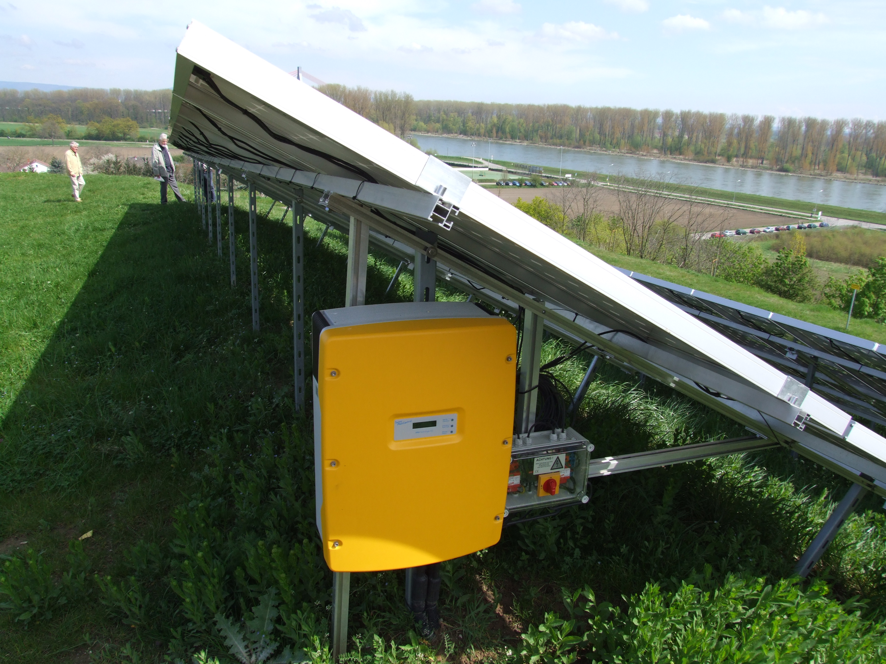

Cost guide
Solar inverter cost
Inverter price depends on type (string, hybrid, off-grid, micro-inverters), power rating, and features. This guide helps you budget and avoid the most common cost mistake: buying an oversized inverter that forces expensive wiring and battery upgrades.
Quick answer: typical inverter price ranges
Most solar inverter budgets fall into predictable bands. A common way to compare is cost per watt of inverter capacity, but the better view is “total installed system impact” (wiring, battery current, and compatibility).
| Inverter type | Typical price range | What you’re usually paying for |
|---|---|---|
| String inverter (grid-tied) | $800–$3,000+ | Higher power ratings, monitoring, warranty tier |
| Hybrid inverter | $1,200–$5,000+ | Battery integration features and controls |
| Off-grid inverter | $700–$4,500+ | Surge capability, battery charging, robustness |
| Micro-inverters (per panel) | $120–$250+ each | Per-panel conversion and monitoring |
Inverter cost by type (what changes the price)
String inverters
String inverters are a common grid-tied approach: one main unit converts DC to AC for the array. Price is often driven by power rating, monitoring, warranty tier, and installation specifics.
Hybrid inverters
Hybrid inverters blend solar conversion with battery management features. They can simplify a “solar now, battery later” plan, but the integrated controls typically increase cost.
Off-grid inverters
Off-grid units are often chosen for cabins and RV-style setups. Surge rating and continuous power are the numbers that often separate low-cost options from higher-tier models.
Micro-inverters
Micro-inverters cost more per watt but can improve performance in shading conditions and provide panel-level monitoring. They’re often compared against string inverters rather than off-grid options.

{kind=link}
What drives solar inverter cost the most
1) Continuous watts and surge watts
Higher power ratings generally cost more. Surge capability can matter more than continuous watts for motor starts and compressor loads.
2) Waveform quality (pure sine vs modified sine)
Pure sine wave units are commonly chosen for broader compatibility. Modified sine wave can be cheaper but may cause noise, heat, or poor performance with some loads.
3) Monitoring, controls, and integration
Hybrid functionality, advanced monitoring, and control features can add cost, but may simplify your overall system design.
4) Warranty tier and brand category
Longer warranties and proven reliability typically increase upfront price.
Cost per watt: a quick way to sanity check
Inverter pricing is often discussed as cost per watt of inverter capacity. This can help compare models, but it should not be the only filter.
Higher cost per watt can sometimes buy better surge performance, monitoring, or warranty coverage.
Installation and balance-of-system costs
Inverter replacement or installation often requires wiring changes, new disconnects, or updated breakers. These costs are easy to overlook when comparing models.
If you are upgrading inverter size, budget for thicker battery cables, larger fuses, and possibly a higher-voltage battery bank.
Battery integration and hybrid costs
Hybrid inverters can simplify battery integration, but you may still need compatible batteries, a battery management system, and additional wiring.
Make sure the inverter supports the battery chemistry and communication protocols you plan to use.
How inverter sizing affects total system cost
An oversized inverter can trigger “hidden” costs: heavier cables, larger fuses/breakers, and a battery configuration that can handle higher current draw. This is especially relevant for off-grid systems where battery-side current can become extreme.
If you’re trying to reduce cost, the cleanest approach is often to define a realistic “peak load list” and design around that—rather than buying the largest inverter you can afford.
Lifespan and replacement planning
Inverters are one of the most common long-term replacement items in a solar system. Budgeting for replacement in 10 to 15 years is a practical way to avoid surprises.
Warranty length and service access matter. A cheaper unit that is hard to service can cost more over time.
Cost-saving checklist
- Size to real loads: avoid oversizing and unnecessary surge capacity.
- Match system voltage: higher voltage can reduce current and wiring cost.
- Prioritize compatibility: confirm battery and controller support before purchase.
- Plan for monitoring: basic monitoring can prevent costly downtime.
Compare efficiency at your typical load, not just peak ratings.
Idle draw matters for small systems that run all day.
Micro-inverter budgeting note
Micro-inverters are priced per panel. The total cost depends on panel count, so a larger array can add up quickly. However, panel-level monitoring and shading performance can offset some of that cost in tricky roof layouts.
Comparing quotes
When comparing inverter quotes, ensure they include the same output type, warranty length, and monitoring features. A lower price can hide shorter warranties or missing accessories.
Used or refurbished inverters
Used units can look inexpensive, but check warranty transfer, service history, and firmware support. Inverters are electronics, so age and heat exposure shorten life. If you buy used, set aside budget for early replacement and confirm support options.
Ask for a test report if available and avoid units without clear serial numbers.
Shipping and installation accessories
Some inverters require external disconnects, remote displays, or mounting kits. Those accessories add cost and are easy to miss in the initial price.
Service access and downtime
Inverters placed in hard-to-reach locations can increase service costs. Easy access helps reduce downtime and labor expense during repairs.
Quick summary
Match inverter type and size to your loads, then budget for wiring and accessories. Oversizing is the most common cost mistake.
Common mistakes that increase inverter cost
- Buying before sizing: inverter choice should come after you estimate peak AC loads and surges.
- Ignoring surge requirements: an undersized surge rating can cause nuisance trips and upgrades.
- Skipping compatibility checks: confirm battery voltage, controller compatibility, and waveform requirements.
FAQ
How much does a solar inverter cost to replace?
Replacement cost depends on inverter type and size. Budget for the unit plus potential labor and any required electrical work.
Are micro-inverters more expensive?
Often per watt, yes. The tradeoff can be panel-level monitoring and better performance in shading scenarios.
Does inverter cost scale linearly with wattage?
Not perfectly. Some higher-tier features and warranty categories change price bands more than wattage alone.
What’s the safest default for waveform?
If you run mixed electronics and appliances, pure sine wave is usually the safer compatibility choice.
Should I buy a used inverter?
Used units can save money but may lack warranty coverage or have unknown wear. For critical systems, new units are safer.